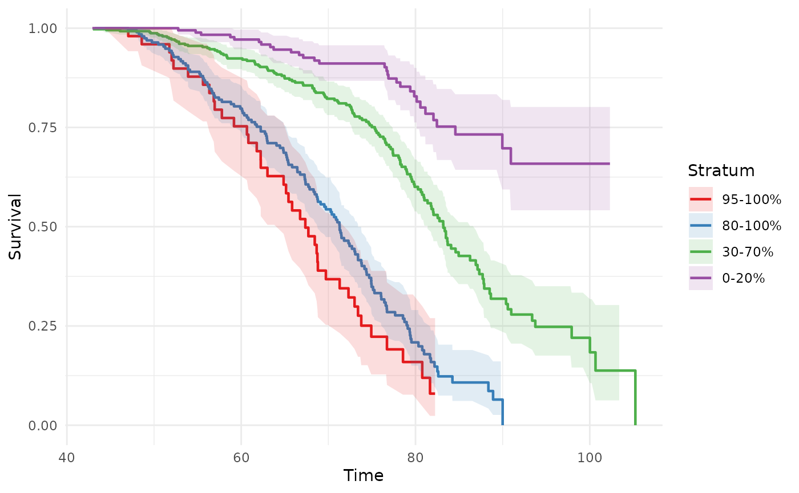
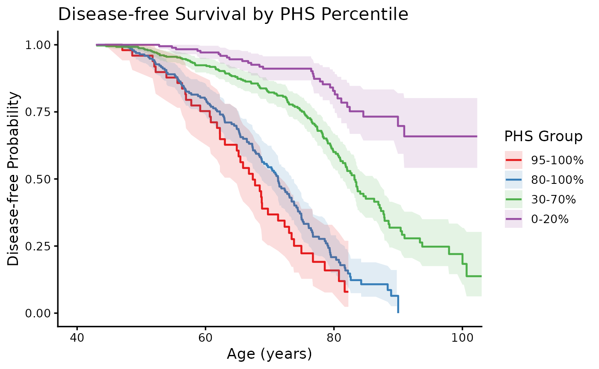
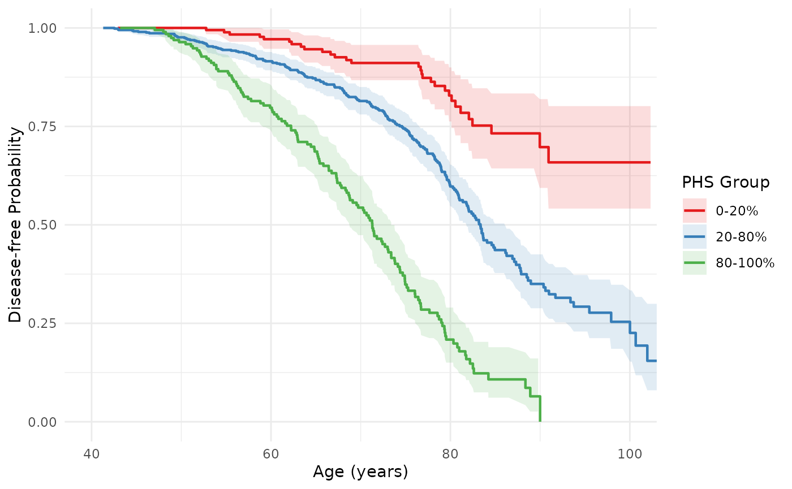
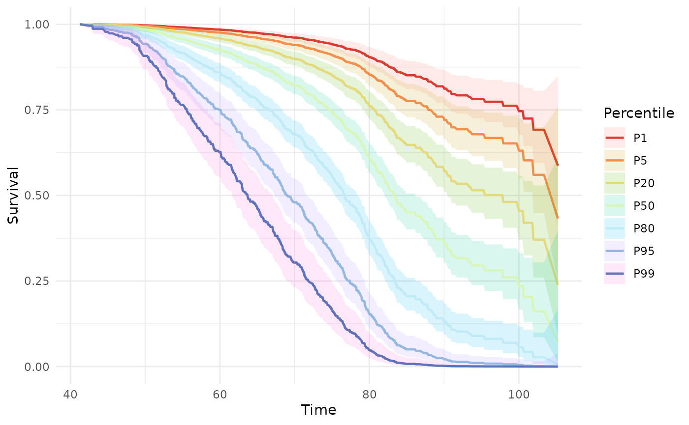
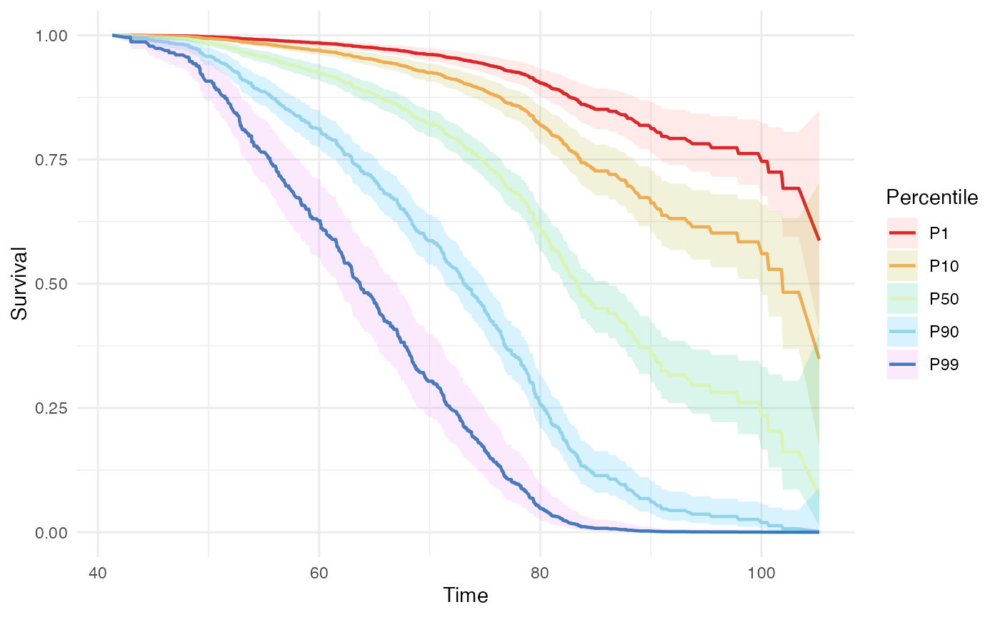

hazrd provides a consistent API for computing
survival-based discrimination metrics and visualizing Kaplan-Meier
curves stratified by polygenic hazard score (PHS). The two primary
user-facing functions are phs_metrics() for statistics and
phs_km() for plots.
Data
The package ships with a simulated survival dataset,
test_data. The three required columns are phs
(continuous score), age (time to event or censoring), and
status (event indicator: 1 = event, 0 = censored).
Here is our test data included in the package.
head(test_data)
#> phs age status
#> 1 0.8425735 67.95011 1
#> 2 1.1151321 56.31356 0
#> 3 -0.3777455 72.94103 1
#> 4 0.1201511 82.01571 1
#> 5 -0.4041602 74.33629 1
#> 6 -0.4531890 77.15814 1Computing metrics with phs_metrics()
phs_metrics() is the single entry point for all
discrimination statistics. It fits a Cox proportional hazards model and
derives metrics from the fit. The metrics argument controls
which statistics are computed; column names are passed as strings and
default to "phs", "age", and
"status".
All core metrics in one call
metrics <- phs_metrics(
test_data,
metrics = c("HR", "C_index", "OR", "HR_SD"),
or_age = 70
)
metrics
#> # A tibble: 4 × 9
#> metric estimate conf_low conf_high se n_numerator n_denominator method
#> <chr> <dbl> <dbl> <dbl> <dbl> <int> <int> <chr>
#> 1 HR[80-100]… 8.17 NA NA NA 200 200 conti…
#> 2 C_index 0.708 NA NA NA NA NA harre…
#> 3 HR_SD 2.12 NA NA NA NA NA NA
#> 4 OR[80-100]… 8.52 NA NA NA 200 200 NA
#> # ℹ 1 more variable: adjusted <lgl>The returned tibble has one row per metric. conf_low,
conf_high, and se are NA until
bootstrapping is enabled.
Hazard ratio
By default phs_metrics() computes
HR[80-100]_[0-20] — the ratio of the top 20% to the bottom
20% of the PHS distribution. Use hr_numerator /
hr_denominator to change the bands:
phs_metrics(test_data, metrics = "HR", hr_numerator = 0.90, hr_denominator = 0.10)
#> # A tibble: 1 × 9
#> metric estimate conf_low conf_high se n_numerator n_denominator method
#> <chr> <dbl> <dbl> <dbl> <dbl> <int> <int> <chr>
#> 1 HR[90-100]… 13.7 NA NA NA 100 100 conti…
#> # ℹ 1 more variable: adjusted <lgl>For multiple HRs in one call, supply hr_pairs:
phs_metrics(
test_data,
metrics = "HR",
hr_pairs = list(
list(numerator = c(0.80, 1.00), denominator = c(0.00, 0.20)),
list(numerator = c(0.80, 1.00), denominator = c(0.40, 0.60))
)
)
#> # A tibble: 2 × 9
#> metric estimate conf_low conf_high se n_numerator n_denominator method
#> <chr> <dbl> <dbl> <dbl> <dbl> <int> <int> <chr>
#> 1 HR[80-100]… 8.17 NA NA NA 200 200 conti…
#> 2 HR[80-100]… 3.05 NA NA NA 200 200 conti…
#> # ℹ 1 more variable: adjusted <lgl>Odds ratio
The OR is computed from Kaplan-Meier survival estimates at a specific
age. or_age accepts a vector; one row is returned per
age:
phs_metrics(test_data, metrics = "OR", or_age = c(65, 70, 75))
#> # A tibble: 3 × 9
#> metric estimate conf_low conf_high se n_numerator n_denominator method
#> <chr> <dbl> <dbl> <dbl> <dbl> <int> <int> <chr>
#> 1 OR[80-100]… 8.22 NA NA NA 200 200 NA
#> 2 OR[80-100]… 8.52 NA NA NA 200 200 NA
#> 3 OR[80-100]… 19.1 NA NA NA 200 200 NA
#> # ℹ 1 more variable: adjusted <lgl>Bootstrapped confidence intervals
Set bootstrap = TRUE to populate conf_low,
conf_high, and se. Use a small
n_boot for speed during development:
phs_metrics(
test_data,
metrics = c("HR", "C_index", "HR_SD"),
bootstrap = TRUE,
n_boot = 300,
seed = 42
)
#> # A tibble: 3 × 9
#> metric estimate conf_low conf_high se n_numerator n_denominator method
#> <chr> <dbl> <dbl> <dbl> <dbl> <int> <int> <chr>
#> 1 HR[80-100… 8.17 5.93 11.8 1.36 200 200 conti…
#> 2 C_index 0.708 0.680 0.734 0.0139 NA NA harre…
#> 3 HR_SD 2.12 1.90 2.42 0.124 NA NA NA
#> # ℹ 1 more variable: adjusted <lgl>Non-default column names
Column names are passed as strings, making phs_metrics()
straightforward to use with non-standard data frames:
test_data2 <- with(test_data, data.frame(
score = phs,
diagnosis_age = age,
case = status
))
phs_metrics(
test_data2,
phs = "score",
time = "diagnosis_age",
event = "case",
metrics = c("HR", "C_index")
)
#> # A tibble: 2 × 9
#> metric estimate conf_low conf_high se n_numerator n_denominator method
#> <chr> <dbl> <dbl> <dbl> <dbl> <int> <int> <chr>
#> 1 HR[80-100]… 8.17 NA NA NA 200 200 conti…
#> 2 C_index 0.708 NA NA NA NA NA harre…
#> # ℹ 1 more variable: adjusted <lgl>Kaplan-Meier curves with phs_km_curve()
phs_km_curve() stratifies the cohort into percentile
bands and plots empirical Kaplan-Meier survival curves for each band. It
returns either a ggplot object
(output = "plot", the default) or a tidy data frame
(output = "data").
Default plot
The default breaks = c(0.20, 0.80) splits the cohort
into bottom 20%, middle 60%, and top 20%:
phs_km_curve(test_data)
#> Warning: Removed 2 rows containing missing values or values outside the scale range
#> (`geom_ribbon()`).
Custom cutpoints
Pass any numeric vector of percentile cutpoints (strictly in (0, 1))
to breaks:
# Quintiles
phs_km_curve(test_data, breaks = c(0.20, 0.40, 0.60, 0.80))
#> Warning: Removed 2 rows containing missing values or values outside the scale range
#> (`geom_ribbon()`).
Modifying the ggplot output
phs_km_curve() returns a standard ggplot
object that can be extended with any ggplot2 layers, themes, or
scales:
phs_km_curve(test_data) +
theme_classic(base_size = 13) +
labs(
title = "Disease-free Survival by PHS Percentile",
x = "Age (years)",
y = "Disease-free Probability",
color = "PHS Group",
fill = "PHS Group"
) +
coord_cartesian(xlim = c(40, 100))
#> Warning: Removed 2 rows containing missing values or values outside the scale range
#> (`geom_ribbon()`).
Getting the underlying data
Use output = "data" when you want to build a fully
custom plot or pass the survival estimates on to further analysis:
km_data <- phs_km_curve(test_data, output = "data")
head(km_data)
#> time estimate conf.low conf.high n.risk n.event stratum
#> 1 42.92288 1 1 1 199 0 0-20%
#> 2 43.64664 1 1 1 198 0 0-20%
#> 3 44.88269 1 1 1 197 0 0-20%
#> 4 47.17180 1 1 1 196 0 0-20%
#> 5 48.21010 1 1 1 195 0 0-20%
#> 6 48.52730 1 1 1 194 0 0-20%The returned data frame has columns time,
estimate, conf.low, conf.high,
n.risk, n.event, and stratum,
which can be used directly with ggplot2:
ggplot(km_data, aes(x = time, y = estimate,
ymin = conf.low, ymax = conf.high,
color = stratum, fill = stratum)) +
geom_ribbon(alpha = 0.15, color = NA) +
geom_step(linewidth = 0.8) +
scale_color_brewer(palette = "Set1", name = "PHS Group") +
scale_fill_brewer(palette = "Set1", name = "PHS Group") +
coord_cartesian(xlim = c(40, 100), ylim = c(0, 1)) +
labs(x = "Age (years)", y = "Disease-free Probability") +
theme_minimal()
#> Warning: Removed 2 rows containing missing values or values outside the scale range
#> (`geom_ribbon()`).
Cox model curves with phs_cox_curve()
phs_cox_curve() fits a Cox proportional-hazards model
(phs as the sole predictor) and returns predicted survival
curves for individuals at specified PHS percentiles. Unlike
phs_km_curve(), these are smooth model-based predictions,
not empirical group estimates.
phs_cox_curve(test_data)
Supply specific percentiles via the percentiles
argument:
phs_cox_curve(test_data, percentiles = c(0.01, 0.10, 0.50, 0.90, 0.99))